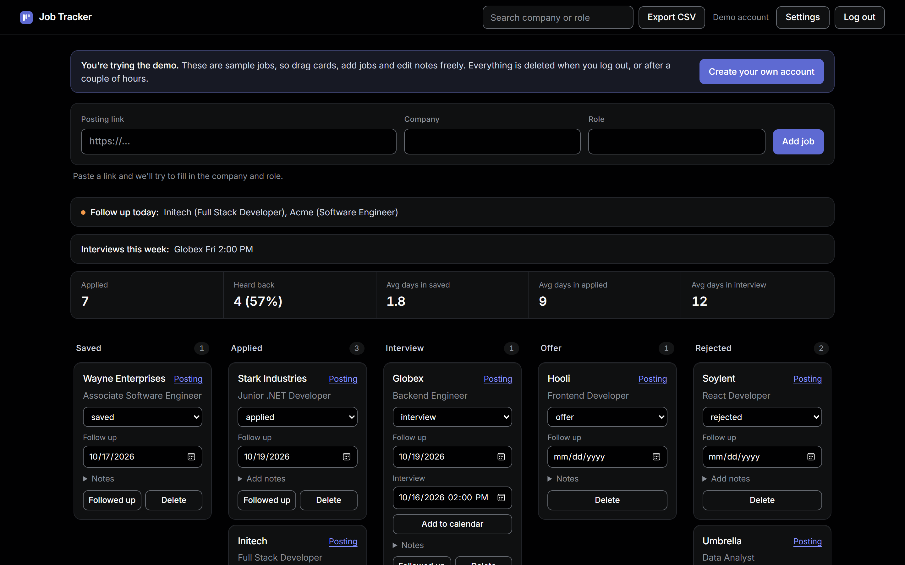

NC Early Math Placement Test – Senior Capstone
Worked on a 5-person team to move a state math placement test that has served 859,000+ students
from paper to an online platform used by NC colleges and universities. I built session-code login
so each proctor controls only the students in their own exam session, the student and teacher score
reports, and the database for student, test and results data.
.NET
C#
JavaScript
Google Cloud
ncempt.org →
Job Application Tracker Live

Paste a job link and the company and role fill in, then drag applications across a pipeline board.
Built and deployed it end to end: Next.js on Vercel, a FastAPI REST API on Render and PostgreSQL on
Neon. Accounts use hashed passwords, required email confirmation and a lockout after 5 failed logins.
It sends branded confirmation and follow-up reminder emails, and has search, CSV and calendar export,
and response-rate stats. GitHub Actions runs the tests and a production build on every push.
Next.js
FastAPI
PostgreSQL
GitHub Actions
Vercel
Try the live demo →
View on GitHub →
One click on "Try the demo" opens a sample board, no sign-up. The free server can take up to a minute to wake up.